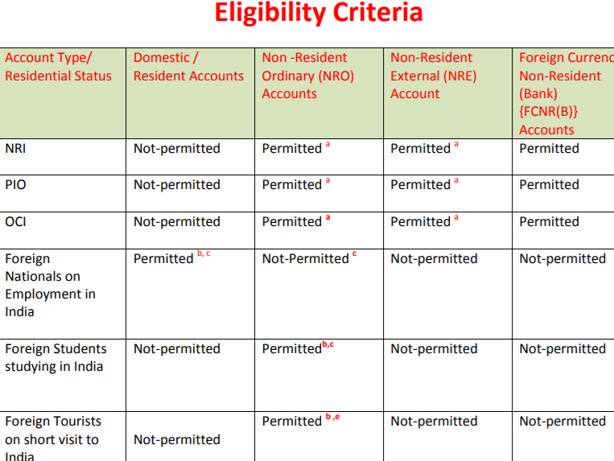

BACK
- AXIS BANK
- BANK OF BARODA
- ICICI BANK
- STATE BANK OF INDIA
- HDFC
- YES BANK
- CITI BANK
- KOTAK MAHINDRA BANK
- RBL BANK
AXIS BANK
Axis Bank Limited is an Indian private sector bank headquatered in Mumbai, Maharashtra. It sells financial services
to large and mid-size companies,.SMEs and retail businesses. As of 30 June 2016,30.81% shares are owned by the
promoters and the promoter group (United India Insurance Company Limited, Oriental Insurance Company
Limited, National Insurance Company Limited, New India Assurance Company Ltd,GIC,LIC and UTI). The remaining
69.19% shares are owned by mutual funds, FIIs, banks, insurance companies, corporate bodies and individual investors.
SERVICES
1.Retail banking:The bank offers lending services to individuals and small businesses, along with
liability products, card services, Internet banking, automated teller machines (ATM) services,depository,
financial advisory services, and Non-resident Indian (NRI) services. Axis bank is a participant in RBI's
NEFT enabled participating banks list.
2.Corporate banking
-Transaction banking:Formed in April 2015, TxB provides integrated products and services to customers
in areas of current accounts, cash management services, capital market services, trade, foreign exchange
and derivatives, cross-border trade and correspondent banking services and tax collections on behalf
of the Government and various State Governments in India.
-Investment banking and trustee services: The bank provides investment banking and trusteeship services
through its owned subsidiaries. Axis Capital Limited provides investment banking services relating to equity
capital markets, institutional stock brokering besides M&A advisory. Axis Trustee Services Limited is engaged
in trusteeship activities, acting as debenture trustee and as trustee to various securitization trusts.
3.International banking:The bank offers corporate banking, trade finance, treasury and risk management through
the branches at Singapore, Hong Kong, DIFC, Shanghai and Colombo, and also retail liability products from its
branches at Hong Kong and Colombo.The representative office at Dhaka was inaugurated during the current
financial year.
for more details visit:https://www.axisbank.com/nri/accounts ,
https://www.axisbank.com/ , Call on:1800-419-5959BANK OF BARODA
Bank of Baroda (BOB) is an Indian multinational, public sector banking and financial services company.It is
the third largest public sector bank in India, with 131 million customers, a total business of US$218 billion,
and a global presence of 100 overseas offices.Based on 2019 data, it is ranked 1145 on Forbes Global 2000
list. The bank has 107 branches/offices in 24 countries (excluding India) including 61 branches/offices of
the bank, 38 branches of its 8 subsidiaries and 1 representative office in Thailand. .Among the Bank of
Baroda's overseas branches are ones in the world's major financial centres (e.g., New York, London, Dubai,
Hong Kong, Brussels and Singapore),as well as a number in other countries. The bank is engaged in retail
banking via the branches of subsidiaries in Botswana,Guyana,Kenya,Tanzania,and Uganda.
 for more details:https://www.bankofbaroda.in/nri.htm,call on:7949044100(NRI from overseas
location),18002584455(NRI from INDIA only)ICICI BANK
ICICI Bank Limited is an Indian multinational banking and financial services company with its registered office in
Vadodara,Gujarat and corporate office in Mumbai,Maharashtra.It offers a wide range of banking products and
financial services for corporate and retail customers through a variety of delivery channels and specialised
subsidiaries in the areas of investment banking,life, non-life insurance, venture capital and asset management.
The bank has a network of 5,275 branches and 15,589 ATMs across India and has a presence in 17 countries.
The bank has subsidiaries in the United Kingdom and Canada; branches in United States,Singapore, Bahrain,
Hong Kong, Qatar, Oman, Dubai International Finance Centre, China and South Africa as well as representative
offices in United Arab Emirates, Bangladesh, Malaysia and Indonesia.The company's UK subsidiary has also
established branches in Belgium and Germany.
Feature that you can avail:
1.Park your foreign income earned outside India.
2.Enjoy full repatriability of your funds.
3.Transfer money at competitive exchange rate.
4.Enjoy exclusive offers with our unique offering of NRI Advantage.
5.Get anytime, anywhere access to the account with our remote banking channels like
Internet Banking, Phone Banking and Video Banking
for more details:https://www.icicibank.com/nri-banking/nri-banking.page?ITM=nli_cms_NRI_topnavigation
contact us:+91-8640086400 or Email us on: Nri@Icicibank.comSTATE BANK OF INDIA
State Bank of India (SBI) is an Indian multinational,public sector banking and financial services statutory
body headquartered in Mumbai, Maharashtra. SBI is the 43rd largest bank in the world and ranked 236th
in the Fortune Global 500 list of the world's biggest corporations of 2019. A nationalised bank, it is the
largest in India with a 23% market share by assets and a 25% share of the total loan and deposits market.
The bank descends from the Bank of Calcutta, founded in 1806 via the Imperial Bank of India,making it
the oldest commercial bank in the Indian subcontinent.The Bank of Madras merged into the other two
presidency banks in British India the Bank of Calcutta and the Bank of Bombay,to form the Imperial
Bank of India,which in turn became the State Bank of India in 1955. The Government of India took control
of the Imperial Bank of India in 1955, with Reserve Bank of India (India's central bank) taking a 60% stake,
renaming it State Bank of India.
General terms and conditions:
1.You should register for OnlineSBI with the branch where you maintain the account.
2.If you maintain accounts at more than one branch, you need to register at each branch separately.
3.Normally OnlineSBI services will be open to the customer only after he acknowledges the receipt
of password.
4.We invite you to visit your account on the site frequently for transacting business or viewing account
balances. If you believe that any information relating to your account has a discrepancy, please bring
it to the notice of the branch by e-mail or letter.
5.In a joint account, all account holders are entitled to register, as users of OnlineSBI, but transactions
would be permitted based on the account operation rights recorded at the branch. (To begin with
the services will be extended only to single or Joint E or S accounts only).
6.All accounts at the branch whether or not listed in the registration form, will be available on the
OnlineSBI. However the applicant has the option to selectively view the accounts on the OnlineSBI.
for more details:https://www.sbi.co.in/web/nri/home
call on:1800 11 2211, or 1800 425 3800HDFC
HDFC Bank Limited is an Indian banking and financial services company headquartered in Mumbai, Maharashtra. It has
a base of 104,154 permanent employees as of 30 June 2019.HDFC Bank is India’s largest private sector bank by assets.
It is the largest bank in India by market capitalisation as of March 2020.A subsidiary of the Housing Development Finance
Corporation, HDFC Bank was incorporated in 1994, with its registered office in Mumbai, Maharashtra, India. Its first
corporate office and a full-service branch at Sandoz House, Worli were inaugurated by the then Union Finance Minister,
Manmohan Singh.HDFC Bank provides a number of products and services including wholesale banking, retail banking,
treasury, auto loans, two-wheeler loans, personal loans, loans against property, consumer durable loan, lifestyle loan and
credit cards. Along with this various digital products are Payzapp and SmartBUY.
Features:
a) Funds transfer & Higher Interest-Transfer funds freely *between India and abroad-Earn higher interest rates on your account-Pay ZERO tax on the interest earned on your NRE Account in Indiab) Accesibility-Withdraw cash easily and shop worldwide with International Debit Card-Appoint a mandate to operate your account for youc) Managing your account-Transfer your funds freely to any place outside India-Conduct transactions securely online, 24x7 with NetBanking-Pay utility bills - electricity, phone, mobile phone - payment by a simple registrationd) Other benefits-Get a personalised cheque book-Get tax exemptions on interest earned and wealth tax-Free Email Statement facility-Avail of Safe Deposit Lockers at certain branches-Invest in Mutual Funds by linking your NRE Savings Account to our Investment Savings Account
for more details:https://www.hdfcbank.com/nri-banking
contact us:+91 8886643131YES BANK
Yes Bank Limited is an Indian Private Sector Bank headquartered in Mumbai, India and was founded by Rana Kapoor and
Ashok Kapur in 2004.It offers wide range of banking and financial products for corporate and retail customers through
retail banking and asset management services. Yes Bank is owned by State Bank of India who has a 30% stake in the
company as of 28 July 2020.
Feature that you can avail:
- You can earn attractive interest rate* with your YES BANK NRE Account
- Free utility bill payment facility through Net Banking for registered billers
- Free RTGS/NEFT payment facility through Net Banking
- Free set-up of Standing Instruction facility etc.
- The interest earned is not liable for/ exempted from Tax in India
- Low cost and convenience- free money transfers through various online and offline modes
- Other mandatory benefits: Free check book and ATM card for an account holder.
YES BANK offers innovative financial solutions, backed by expert advice which in return takes care of your banking
and savings requirements. Plus, their rate of interest is attractive.* on NRE account in India.
Savings Account interest rates are subject to change at the sole discretion of YES BANK. Conditions apply. For latest
savings interest rate.
For more details:https://www.yesbank.in/personal-banking/nri-banking/nri-accounts
For any queries or feedback, please write to us at: yestouch@yesbank.in
call us on:+912261219000(from india), +912230993600(from outside india)CITI BANK
Citibank (styled as citibank) is the consumer division of financial services multinational Citigroup.Citibank was founded in
1812 as the City Bank of New York, and later became First National City Bank of New York.The bank has 2,649 branches in
19 countries, including 723 branches in the United States and 1,494 branches in Mexico operated by its subsidiary Banamex.
The U.S. branches are concentrated in six metropolitan areas: New York City, Chicago, Los Angeles, San Francisco,
Washington, D.C.and Miami. Aside from the U.S. and Mexico, most of the company's branches are in Poland, Russia, India
and the United Arab Emirates.
Features:
a) Interest bearing Savings Account
b) Convenience- Zero charge funds transfers and bill pay options- Zero charge international wire remittance facilities- Cheque Book at no charge
c)24/7 Access- 24/7 Online and Mobile Banking- Online Phone Banking- Debit Card with global access - access your account at ATMs or for paying for purchases at Mastercard merchant
establishments anywhere in the world.
d) Exciting Privileges and Offers
For more details:https://www.online.citibank.co.in/citi-nri/banking/rupee-checking-account.htm?eOfferCode=INNRIHOBMMT2
contact us:1-800-248-4674KOTAK MAHINDRA BANK
Kotak Mahindra Bank Limited is an Indian private sector bank headquartered in Mumbai, Maharashtra,
India. It offers banking products and financial services for corporate and retail customers in the areas
of personal finance, investment banking, life insurance, and wealth management. As of April 2019,it is
the second largest Indian private sector bank by market capitalization, with 1600 branches & 2519 ATMs.
Terms and condition:
The NRI Customer undertakes that he shall
i) intimate about his return to India for permanent residence
ii) abide by the NRE/NRO or any other applicable scheme/directions laid by the RBI from time to time
iii) ensure, in case of debits to NRO/NRE Accounts for the purpose of investments in India and credits
representing sale proceeds of investments, such investments/disinvestments would be covered by the
general or specific permission of the RBI.
The NRI Customer hereby agrees to indemnify the Bank against any losses, claims, costs, charges and
expenses arising from or suffered by the Bank by reason of non-compliance by him of the applicable
laws.
Eligibility:- NRIs and PIOs as per FEMA definition- Seafarers of Indian nationality / origin employed by overseas shipping companies, or- Indian government employees with Diplomat passports, or- Students pursuing studies in foreign countries.
For more details visit: https://www.kotak.com/en/personal-banking/nri.html
write to us at: nriservices@kotak.com
call us on:1860-266-2666 or +91-22-6600-6022 if overseas.
RBL BANK
RBL Bank, formerly known as Ratnakar Bank, is an Indian private sector bank headquartered in Mumbai and founded in 1943.
RBL Bank is one of India’s fastest growing private sector banks with an expanding presence across the country.The Bank
offers Corporate & Institutional Banking, Commercial Banking, Branch & Business Banking, Retail Assets, Development
services under six business verticals namely:Banking and Financial Inclusion, Treasury and Financial Markets Operations.
It currently services over 8.76 million customers through a network of 398 branches, 1,219 business correspondent branches
(of which 254 banking outlets)and 402 ATMs spread across 28 Indian states and Union Territories.
Feature that you can avail:
- ACE NRE Savings Account. ACE NRE Savings Account is a Premium Account
which enables you to manage your overseas earnings in India. ...
- ACE NRO Savings Account. ...
- PRIME EDGE NRE Savings Account. ...
- PRIME EDGE NRO Savings Account. ...
- NRI Individual Current Account. ...
- NRI Individual Current Account. ...
- Portfolio Investment Scheme (PIS) Account.
For more details visit:https://www.rblbank.com/category/nri-deposits?website-button=hp-chooseProd-NRIDep-KnowMore
contact us:+91 22 61156300
write to us at:nribanking@rblbank.com